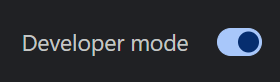
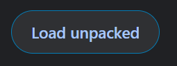

Elige el método de instalación que mejor se adapte a ti
Ambas opciones funcionan bien: elige la que mejor se adapte a tu forma de trabajar.
La forma más sencilla de instalarla en Chrome, Edge, Brave u otros navegadores basados en Chromium.
Actualizaciones disponibles cada pocas semanas, tras el proceso de revisión.
Obtener en Chrome Web StoreLa versión más reciente para Chrome, Edge, Brave y otros navegadores Chromium.
Requiere el modo de desarrollador, pero recibe las actualizaciones de inmediato.
Ver las instrucciones de instalación Descargar la última versiónExtensión firmada de Firefox para instalación directa.
Algunas funciones, como los modelos de texto a voz y la captura de pestañas, no están disponibles en Firefox.
Ver las instrucciones de instalación Descargar XPIAplicación de escritorio independiente para Windows 10/11 (x64).
No necesita extensión del navegador. Se actualiza automáticamente.
Descargar para WindowsAplicación de escritorio independiente para macOS.
No necesita extensión del navegador. Se actualiza automáticamente.
Descargar para macOSAppImage para distribuciones de Linux.
Soporte limitado, aunque debería funcionar en la mayoría de las distribuciones modernas.
Descargar AppImageBusca el aviso exacto que aparece en pantalla para encontrar los pasos seguros ante SmartScreen, Defender, Smart App Control, las comprobaciones de desarrolladores de macOS, los avisos de notarización o los errores de AppImage en Linux.
Abrir la guía de seguridad de la aplicación de escritorioSSApp 0.4.7 y versiones posteriores incluyen un modo de inicio MCP integrado. No necesitas descargar el código fuente, instalar Node ni usar un adaptador aparte. Tras instalar la aplicación, activa Archivo > IA local / Automatización (File > Local AI / Automation) y copia la configuración de MCP generada.
Ver la configuración de IA local y MCPConecta el chat de YouTube, Twitch o Kick sin instalar la extensión ni la aplicación de escritorio. Abre Lite en una pestaña del navegador o en un panel personalizado de OBS y usa su enlace de superposición en OBS.
Un enlace de superposición normal necesita que Lite siga funcionando en una pestaña o un panel. Para configuraciones que usan solo OBS, consulta la guía de Lite para OBS.
Ir a Social Stream Ninja LiteSocial Stream Ninja es de código abierto y se distribuye bajo la licencia GPLv3.0. Puedes consultar el código, crear una bifurcación o colaborar con el proyecto en GitHub.
Abre la página de extensiones de tu navegador:
chrome://extensions/ para Chromeedge://extensions/ para Edgebrave://extensions/ para Brave
Activa «Modo de desarrollador» (Developer mode) en la esquina superior derecha de la página de extensiones.

Haz clic en «Cargar descomprimida» (Load unpacked) y selecciona la carpeta donde extrajiste los archivos.

¡Todo listo! Abre una plataforma de chat compatible y haz clic en el icono de la extensión Social Stream Ninja para activarla.
Ver la guía de usoAbre Firefox e instala la extensión:
about:addons en FirefoxLa versión de Firefox tiene algunas limitaciones respecto a Chrome:
Algunas distribuciones pueden mostrar errores del entorno aislado (sandbox) al ejecutar nuestra AppImage. Consulta nuestra guía de solución de problemas del entorno aislado si aparecen errores sobre la configuración del entorno aislado SUID.
Descarga el archivo AppImage en tu equipo.
Haz clic derecho en el archivo, selecciona Propiedades, después Permisos y marca «Permitir ejecutar el archivo como un programa». También puedes usar la terminal: chmod +x SocialStreamNinja.AppImage
Haz doble clic en el archivo AppImage para abrir Social Stream Ninja o ejecútalo desde la terminal: ./SocialStreamNinja.AppImage
Nuestra comunidad de Discord está lista para ayudarte a empezar
Descarga Social Stream Ninja y transforma tu forma de interactuar con tu audiencia en distintas plataformas.